由 SF 字体引出字体的一些术语和排版上的一些概念，介绍了 SF 字体在排版上提供的新功能。
San Francisco Fonts
- SF Pro Text、SF Pro Display：iOS、macOS、tvOS（WWDC 2017 开始启用）
- SF UI Text、SF UI Display：iOS、macOS、tvOS；
- SF Compact Text、SF Compact Display：watchOS；
SF Mono（一种等宽字体，New in WWDC 2016）：Code in Xcode、Terminal、Swift Playgrounds。
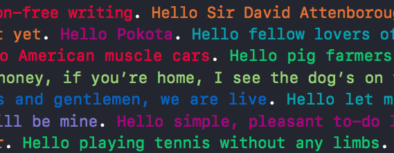
- SF 与 SF Mono
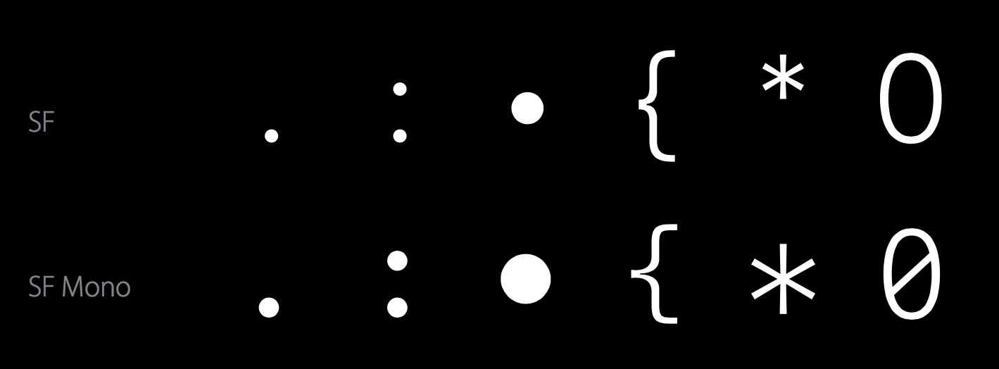
- 等宽字体（Monospaced）：不同字重下有着相同的宽度
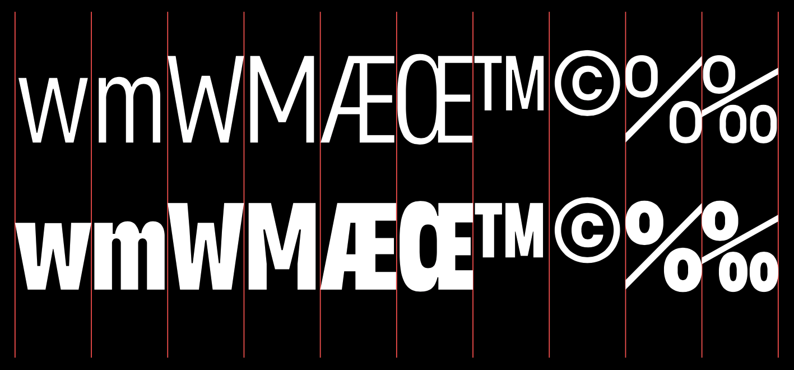
术语 Terminology
- Text：文本，如「App」；
- Character：字符，文本的抽象单位，可以由一个代码代表，如字母「A」
- Glyph：字形，如字母「A」的这个形状，人们看到这个就知道这是字母「A」，而不是其他字母；
Feature：功能，通常在字体文件中，字形与字符是一一对应的，但有时候有特殊，如「6」这个字符在一个字体中有两种「字形」，你可以选择其中一种（Optional）；输入两个字母，这两个字母自动连笔，形成了一个新的字形（Automatic），这都是 Feature；

Font：字体（文件）；
Style：样式，如「粗体」、「斜体」、「粗斜体」、「紧缩」；
Typeface：字型，样式背后的设计理念，如将字母「A」变换成各种不同的形状，但其终究还是字母「A」；
Typography：排版，使用字型来设置文本并给语言编码。
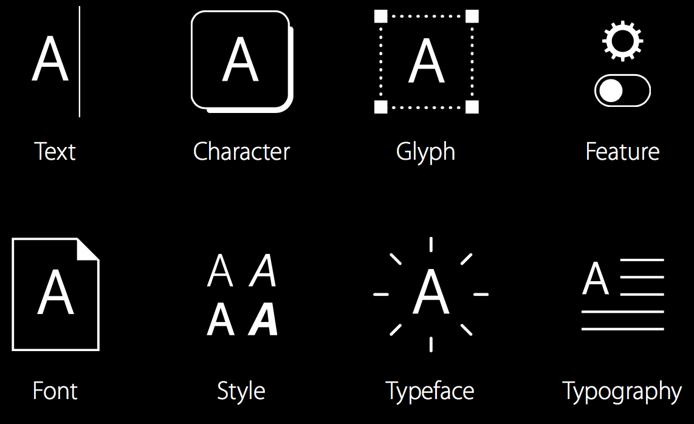
- Text 的关心对象：Writers，Editors；
- Character 的关心对象：Unicode；
- Glyph、Feature、Font、Style、Typeface 的关心对象：Type Designers，Font Manufacturers；
- Typography 的关心对象：Typographers = You（App Developer/Designer）。
概念 Conceps
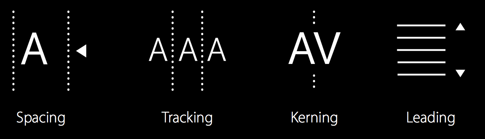
内嵌于字体中（Embedded in the Font）
- Spacing：空间，一个字符所占的位置，内置在字体中无法改变；
Kerning：字偶距，某两个字母间的距离，一般设置在字体内部，无法改变。
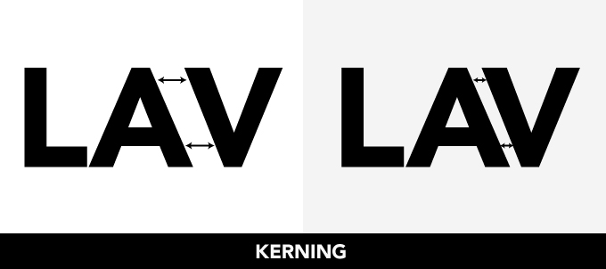
可调整的（Adjustable）
Tracking：字符间距，字间距，所有字符整体调整，正值、零值、负值；
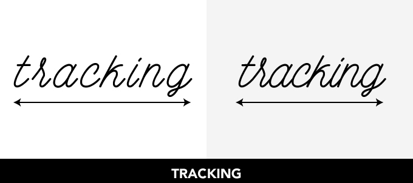
Leading：行距，两行的 baseline 的距离称为行距，descenders-理解为字符延伸到 baseline 下面的那部分，如小写字母 q；ascenders-理解为字符延伸到 baseline 上面的那部分，如小写字母 h。
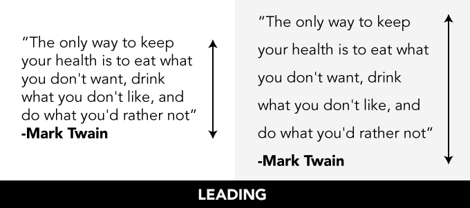
外部参考链接：What’s the Difference Between Leading, Kerning and Tracking?
影响排版的一些因素
- 易读性（Legibility）
- 尺寸（Scale）
- 布局（Layout）
- 密集度（Density）
- 质感（Voice）
工具 Tools
- System Font：使用系统字体只需确定字体大小和字重：
UIFont.systemFont(ofSize: 34, weight: UIFontWeightBlack)，每种字体大小都有预设好的字间距 tracking，开启「粗体文本」后，系统中会自动进行粗体文本转换。 - Dynamic Type：应用在 iOS 和 watchOS，在「设置」→「显示与亮度」→「文字大小」中，「辅助功能」中还可开启「更大字体」。使用 Text Styles APIs：
UIFont.preferredFont(forTextStyle:)，动态类型功能会自动支持。 - Custom Fonts：由于多为开发上的一些实际操作，暂不展开，具体步骤如下，
- Pick or bundle a font
- Lookup table for the Content Size Categories
- Override
traitCollectionDidChange - Update your fonts and paragraph style
- Relayout
- Font Selection：如果你决定要使用自定义字体，那么你需要考虑：
- Easier sticking with one typeface at a time 从一次使用一个字型开始更容易
- Understanding design intention helps in usage 深度理解这些字型的设计目的
- Consider defaults and knobs you can turn 考虑你可以改变的那些样式，如字间距、行间距
细节 Details
Arrows 箭头（New in WWDC 2016）：各个方向的箭头是内置于 SF 字体中的，并且同样有不同的自重，可在交互中用于指向。
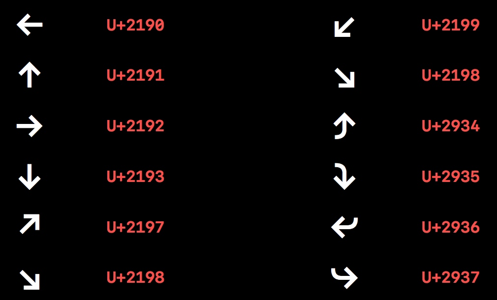
High-Legibility Alternates 高易读性替换（New in WWDC 2016）：对于一串字符串，如果用户不易辨别字符串中的字母到底是什么，可以使用开启这个功能，系统自动把不易辨别的字母转换为不会有歧义的字母。但这个功能不要轻易开启，会破坏文本整体的一致性。
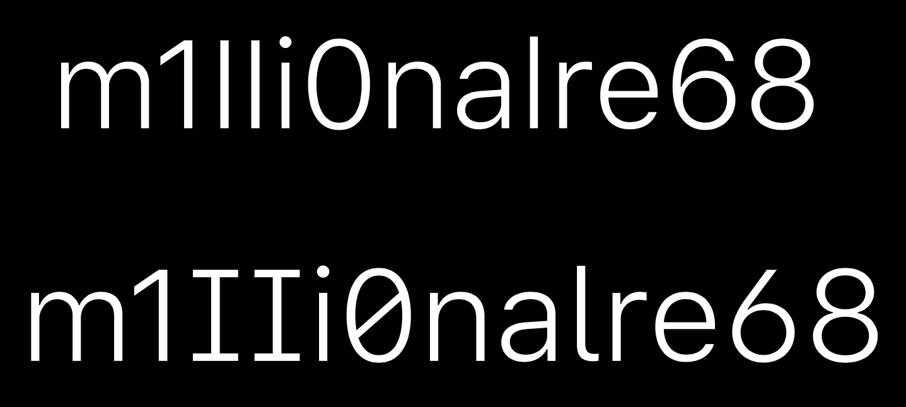
在代码中启用的示例如下：
let pointSize: CGFloat = 60.0 let systemFontDesc = UIFont.systemFont(ofSize: pointSize, weight: UIFontWeightLight).fontDescriptor() let highLegibilityFontDesc = systemFontDesc.addingAttributes( [ UIFontDescriptorFeatureSettingsAttribute: [ [ UIFontFeatureTypeIdentifierKey: kStylisticAlternativesType, UIFontFeatureSelectorIdentifierKey: kStylisticAltSixOnSelector, ], ] ] ) label.font = UIFont(descriptor: highLegibilityFontDesc, size: pointSize)Small Caps 小型大写字母：大写字母的缩小版，几乎与小写字母对齐。两个例子如下图。当觉着大写字母与周围的小写字母相比过大而显得不协调，如果仅仅调整字体大小，那会改变字符串的密集度或者说字间距，故可以开启「Small Caps」功能，保证密集度和笔画厚度，使排版美观。
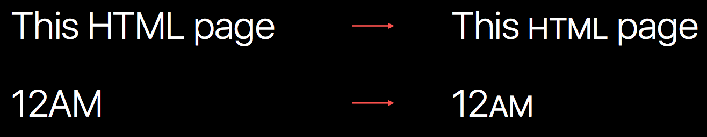
在 Apple TV 上使用的一个实例：
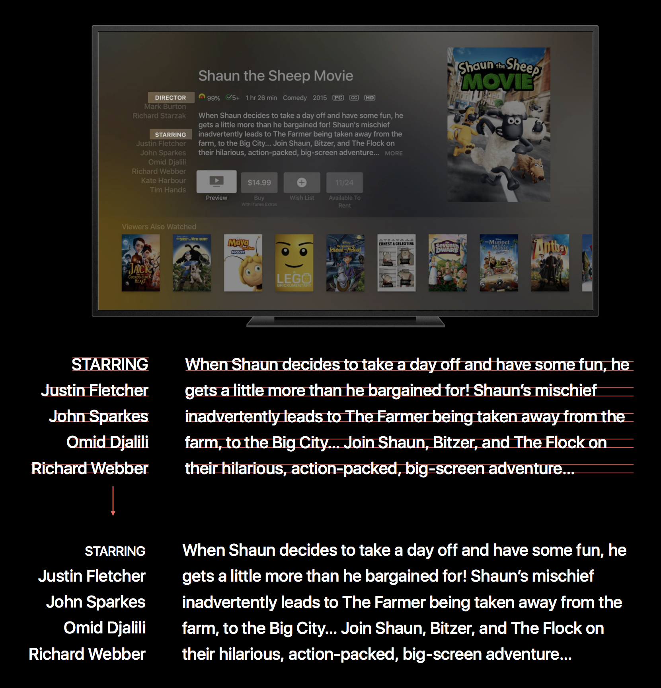
具体使用上分为以下几种类型，可以用一种，也可以用多种：
Small Caps from Uppercase（把大写字母转换为小型大写字母）：对于一个字符串，1.全是大写，适合此功能；2.大小写混合，不适合此功能；3.全是小写，这样使用有点别扭，但也还 OK。
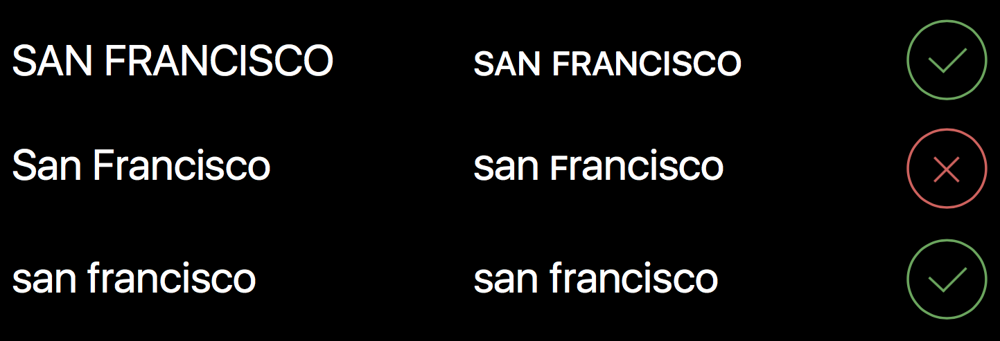
Small Caps from Lowercase（把小写字母转换为小型大写字母）：字符串的上述三种情况都还适合。
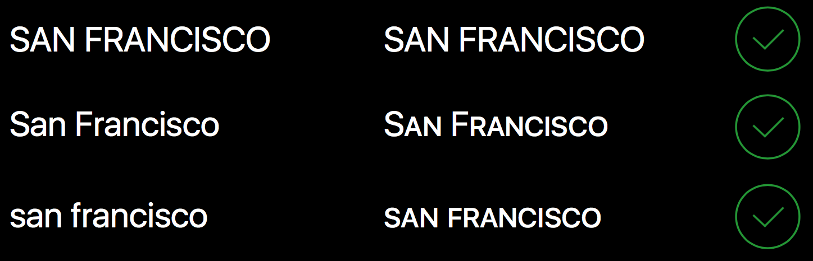
上述两种类型在代码中启用的方法示意如下：
let pointSize: CGFloat = 60.0 let systemFontDesc = UIFont.systemFont(ofSize: pointSize, weight: UIFontWeightLight).fontDescriptor() let smallCapsFontDesc = systemFontDesc.addingAttributes( [ UIFontDescriptorFeatureSettingsAttribute: [ [ UIFontFeatureTypeIdentifierKey: kLowerCaseType, UIFontFeatureSelectorIdentifierKey: kLowerCaseSmallCapsSelector, ], [ UIFontFeatureTypeIdentifierKey: kUpperCaseType, UIFontFeatureSelectorIdentifierKey: kUpperCaseSmallCapsSelector, ], ] ] ) label.font = UIFont(descriptor: smallCapsFontDesc, size: pointSize)Small Caps Numbers and Punctuation
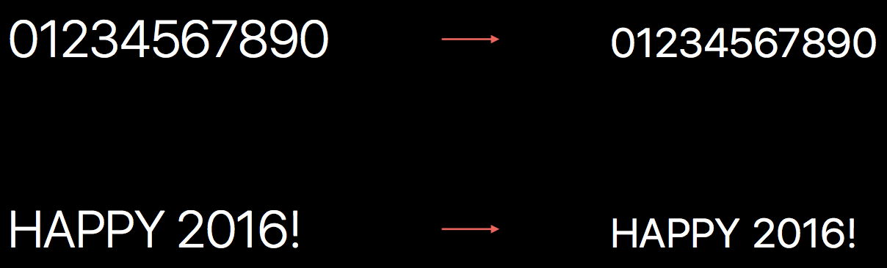
Session 链接：Typography and Fonts - WWDC 2016 - Videos - Apple Developer
相关文章
- 有关于 SF 字体的更多介绍： 新的系统字体 Introducing the New System Fonts - WWDC 2015 Session 804
📱💻⌚️📺
如果你觉得这篇文章对你有所帮助，欢迎请我喝杯咖啡，感谢你的支持😁